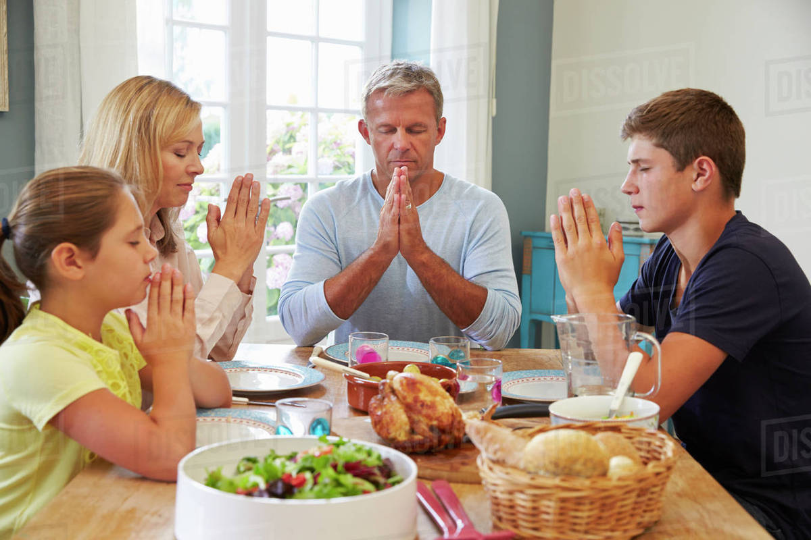

Sianko pod obrusem
– ten ten zwyczaj wywodzi się jeszcze z czasów pogańskich i ma związek z dawnym świętem
agrarnym. Jak nakazuje tradycja, siano należy położyć pod obrusem. Symbolizuje to narodzenie Jezusa w ubóstwie.
Z tym zadaniem bez problemu poradzi sobie małe dziecko – – pozwól mu wykonać tęę symboliczną czynność, a
starszakowi wyjaśnij jej znaczenie.

Pierwsza gwiazdka
– tradycyjnie wieczerza wigilijna rozpoczyna się wraz z pierwszą gwiazdką na niebie. Jest to
symboliczne nawiązanie do Gwiazdy Betlejemskiej, oznaczającej narodziny Jezusa, którą według Biblii na
wschodniej stronie nieba ujrzeli Trzej Królowie. Zadanie wypatrzenia na niebie pierwszej gwiazdki powierz
dzieciom.

Wspólna modlitwa
– kolację wigilijną, w polskiej tradycji postną, rozpoczyna modlitwa i czytanie fragmentu
Ewangelii wg św. Mateusza lub Łukasza, dotyczącego narodzin Jezusa.

Opłatek
– przełamanie opłatka ze wszystkimi uczestnikami wieczerzy wigilijnej jest jej centralnym punktem. Gest
ten symbolizuje wzajemne poświecenie się jednych dla drugich i chęć dzielenia się z bliskimi owocami swojej
codziennej pracy. Dzielenie się opłatkiem ma w zamyśle zbliżać i łączyć ludzi. Dawniej opłatki były wypiekane na
plebaniach, w klasztorach, i roznoszone po domach. Opłatek jest pozostałością, śladem eulogii
starochrześcijańskich (chleba ofiarnego, który składano na ołtarzu w czasie przygotowania darów
eucharystycznych). Zadbaj o to, by dziecko miało swój opłatek, którym zapewne niechętnie będzie się dzieliło –
jednak dzięki temu poczuje, że w pełni uczestniczy w spotkaniu.